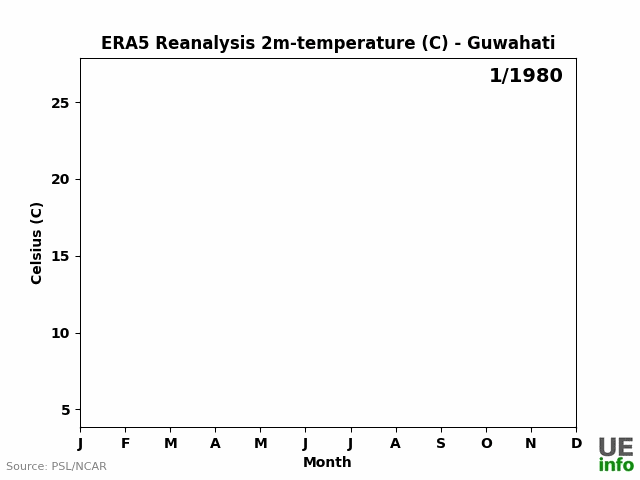

Air Quality Visuals [2025]
This is a repository on different kinds of visuals possible with air quality data GitHub
Working paper: How to visualize ambient air monitoring data?


This is a repository on different kinds of visuals possible with air quality data GitHub
Working paper: How to visualize ambient air monitoring data?
CPCB releases daily AQI data for each city.
We made this data accessible here: AQI Bulletins | Datasette Lite (open on desktop) |
Tutorial on publishing datasets to Datasette
This data is presented using Bokeh here: Link
Here is a report based on this data: Link
For more details: GitHub
This research is presented at the iCACGP-IGAC Conference 2024, Kuala Lumpur.

I built an RAG Chatbot on the Constitutional Assembly Debates so that we citizens can better
interact with the wisdom contained in these debates. It's a WIP. Please feel free to contribute or give me feedback in
improving this.
CAD Chatbot |
GitHub
I forked an open source quiz React web-app and built upon it:
We want to use this quiz at UrbanEmissions.info for trainings and public engagement purposes.
I integrated it with Google Sheets.
I'm not a front-end dev, but anyone interested in building a simple open-source quiz application can build upon this.
Answer the Air Quality Quiz |
GitHub |
Slide deck
Tropospheric Ozone is a pollutant, unlike the stratospheric Ozone that we want to protect.
Ozone’s presence as a driving factor in the air pollution has increased upto 20% over the last 5 years.
NOx and VOCs react to produce it.
Even though NOx levels are reducing in Indian cities due to BSVI emission standards, Electric vehicles etc.,
we may not see a proportional reduction in Ozone levels.
This is because we have had extremely high amounts of NOx emissions in our cities.
So, we have to focus on VOCs as well (reduce waste burning, stubble burning, biofuels etc).
This research is presented at the iCACGP-IGAC Conference 2024, Kuala Lumpur.

GitHub
There is no dearth of data on air pollution, but still we lack in action. Why?
One reason is that we are unable to tell what to do about it.
Any solution proferred recieves a stream of excuses of why that is not possible.
These excuses can however be articulated mathematically - as constraints.
Then we can solve the problem at hand - minimising air pollution.
UrbanEmissions.info developed many MS Excel tools that enable practitioners to use the pollution data and tell these stories of what their governments 'should do': Tools
Now we're making these tools more accessible by open sourcing them and building web applications. Examples:
AQI Simulator |
Waste Management Simulator
If you want to contribute in this open source project, please check it out here:
GitHub
Physical Sciences Laboratory has meterological data of various reanalyses across years. I extracted this data and visualised it.

GitHub
Vivekam is a Twitter(X) bot that tweets wisdom of Swami Vivekananda from his written works.
I'd frequented RK Math in Hyderabad and did good reading of Swami Vivekananda. I am using this bot to re-read his works and broadcast his message of reason, love and inclusion.
GitHub
SamvidhanBot is a Twitter(X) bot that tweets wisdom from the Constitution of India and its makers.
It was created on January 26, 2022. Later, Twitter became X, APIs got changed, there are no more free servers available.
Eventually, SamvidhanBot is hosted on my RaspberryPi.
We always need content and newer ideas for the bot. Feel free to contribute.
GitHub |
SamvidhanBot Blog |
TROPOMI (TROPOspheric Monitoring Instrument) is the satellite instrument on board the Copernicus Sentinel-5 Precursor (S5P) satellite.
TROPOMI monitors trace gases and aerosols relevant for air quality and climate.
In this project, TROPOMI data of pollutants NO2, SO2, HCHO and O3 is extracted via Google Earth Engine (GEE).
Data is extracted for 104 airsheds (Indian Cities) at 1000m resolution and for India at 0.1 degree resolution.

GitHub
Plots and CSVs for 104 airsheds:
NO2 |
SO2 |
HCHO |
O3 |
40% of Assam experiences flood every year and the government spends hundreds of crores to manage floods.
IDS-DRR is to make this flood management more thoughtful by providing evidence to the decision makers on Flood Hazard, Losses & Damages, Vulnerability etc.
I worked predominantly on geospatial datasets to make these datasets available for decision making.
My Talk at IndiaFOSS3.0 |
Presentation for the talk |
GitHub
Blog introducing the datasets
Blog on processing flood inundation maps from BHUVAN
Blog on Confirmatory Factor Analysis (CFA) to make sense of the data
Legal researchers annotate court judgments to mark variables of interest. Manually, they can only annotate a few judgments.
I used NLP (from regex to ML models) to automate this process. About 300 judgments related to Child Rights are datafied this way.
These datasets are used by researchers in their Empirical Legal Research (ELR).
My Talk at FOSS-U Hyderabad Meetup |
My Talk at HydPy-Hyderabad |
Presentation for the talk
GitHub |
Medium Blog
Research report published by Enfold |
Methodology report
Delhi's air pollution needs no introduction.
I've automated the environment monitoring processes in the Green War Room of Delhi Government.
Enabled the Environment Secretary to take a more data-informed decision on managing air quality in Delhi.
Green Delhi Dashboard |
Medium Blog | Automating Impact
Some mention of this project in the Economic Survey of Delhi
This is the first dashboard I'd built for a weekend hackathon at the Indian School of Business (ISB).
We analysed Mission Antyodaya 2019 data to create "Deprivation Index" for each district.
Machine Learning was not required, but we implemented basic K-Means Clustering to sound fancy.
We won the hackathon.
Antyodaya Dashboard |
GitHub